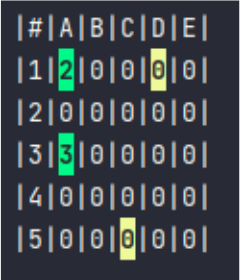

John Largao
John LargaoProyectos
- Buscaminas con Kotlin
- Protocolo de transferencia de archivos con BashScripting
Durante este curso he sido introducido a los lenguajes de programacíon. Como tarea final de la asignatura de programacíon modular he programado el juego Buscaminas trabajando con la terminal y utilizando los lenguajes de programación: Kotlin y Java.
Gracias a este proyecto he aprendido mucho acerca de la programación en general y como líneas de código pueden hacer cosas interesantes. El juego lo he programado desde cero utilizando todos los conocimientos que he aprendido a lo largo del curso, pero aún tengo pensado implementar cosas nuevas y programalo con algún otro lenguaje como por ejemplo Python.El juego genera un tablero donde se generan a su vez minas en ciertas posiciones. El reto del usuario es conseguir despejar todas las casillas sin lograr alcanzar ninguna mina. El juego permite al usuario crear un tablero de las dimensiones que él quiera y también elegir alguno de los 3 niveles disponibles, los cuales se diferencian por la cantidad de minas que se generan en el tablero.

Uno de los aspectos, si no el aspecto más importante son las redes, protocolos etc. Este es un proyecto que realizamos en el aula y que consiste en crear un protocolo
de transferencia de archivos. Con este proyecto he aprendido mucho acerca de las redes en general, desde como funciona un protocolo y la estructura de este,
que son los puertos hasta y sus servicios hasta los aspectos de seguridad que tenemos que implementar en estos protocolos.
El protocolo está programado con BashScripting, un lenguaje que he aprendido durante el aprendizaje del sistema operativo GNU/Linux.